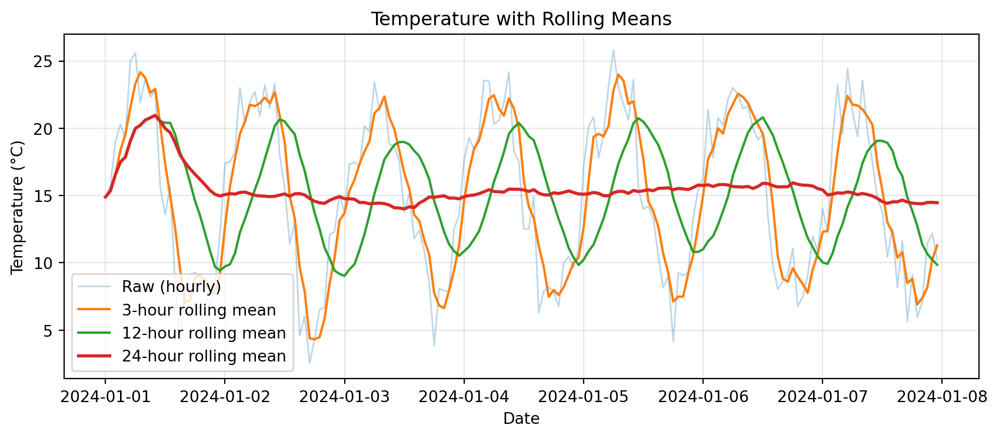
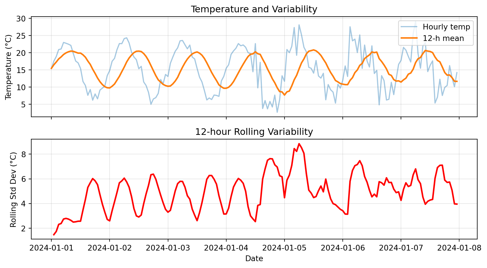
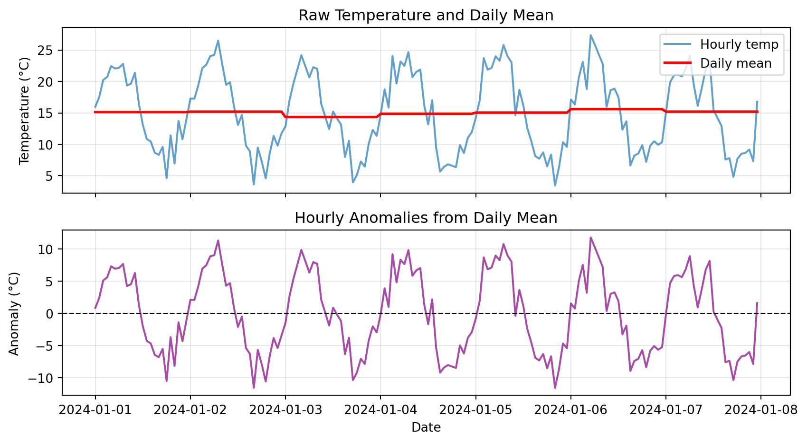
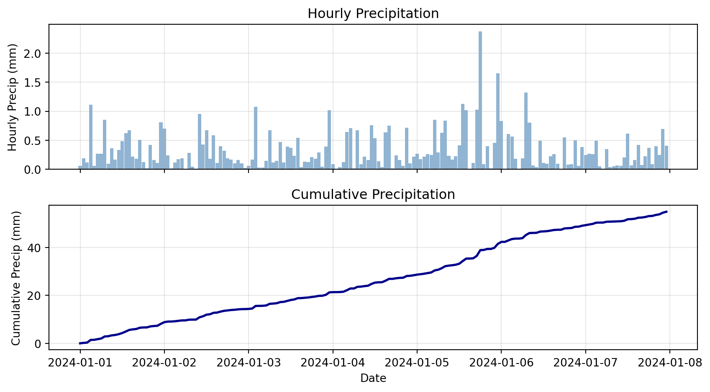
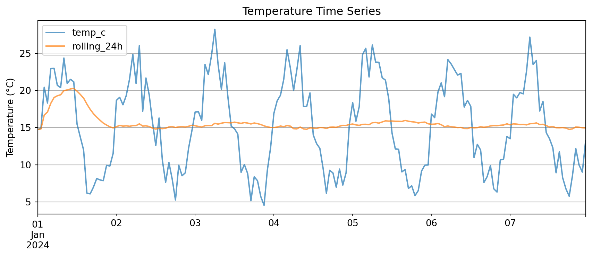
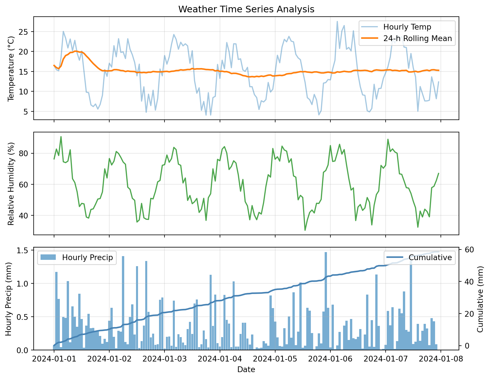

Mon 15.2
Tue 18.7
Wed 22.1
Thu 19.8
dtype: float64ATOC 4815/5815
Tabular Data & Pandas Foundations - Week 4
Will Chapman
CU Boulder ATOC
2026-01-01
Tabular Data & Pandas
Today’s Objectives
- Understanding pandas: from arrays to tables
- Reading and parsing CSV files with dates
- Time series indexing and resampling
- Rolling windows and aggregations
- Creating publication-quality time series plots
- Recognizing and fixing common pandas errors
- Building analysis workflows you’ll use in research
Reminders
Due Friday at 9pm:
- Lab 4
- HW4
Office Hours:
Will: Tu / Th 11:15-12:15p
Aiden: M / W 4-5p
The Real Problem
Your Research Scenario
Imagine: You’re analyzing Boulder’s urban heat island effect
Your data:
- 10 ASOS weather stations around Boulder
- 1 year of hourly measurements (8,760 hours × 10 stations = 87,600 rows!)
- Multiple variables: temperature, humidity, wind speed, pressure, precipitation
Each station CSV looks like:
Date and Time,Station,Temp_C,RH_pct,Wind_kt,Pressure_hPa,Precip_mm
2024-01-01 00:00,KBDU,2.1,65,8,1013.2,0.0
2024-01-01 01:00,KBDU,1.8,68,7,1013.5,0.0
2024-01-01 02:00,KBDU,1.2,71,6,1013.8,0.2
...Questions you need to answer:
- What’s the average daily temperature at each station?
- Which station is warmest? When?
- How does precipitation accumulate over the month?
- Are there heat waves (3+ consecutive days > 30°C)?
Why NumPy Arrays Fall Short
Try solving this with NumPy arrays…
Problem 1: Multiple data types
Problem 2: No column names
What Pandas Gives Us
Pandas solves all these problems:
1. Mixed data types in columns:
2. Named columns:
3. Time-aware operations:
Bottom line: For tabular data with time series, Pandas is the right tool. NumPy is for uniform numeric arrays and math.
Why Pandas?
Pandas Scientific Story
Created by Wes McKinney (late 2000s) to handle panel data for quantitative finance
- Goal: bring R/Excel/SQL-style table tools into Python
Built on top of NumPy, adding:
- Labeled rows/columns (
DataFrame,Series) - Easy handling of missing values
- Powerful time-series tools (date indexes, resampling, rolling windows)
Became the standard tabular data library in scientific Python:
- Most data tutorials start with
import pandas as pd - Common front-end for reading/writing CSV, Excel, SQL, NetCDF/Parquet, etc.
- Feeds directly into NumPy, Matplotlib, and higher-level tools (xarray, geopandas, statsmodels)
For this course, think of pandas as:
“Excel + SQL + NumPy, but in code” — a single place to clean data, compute statistics, and drive time-series visualizations.
Mental Model: NumPy vs Pandas
Think of it this way:
NumPy: "Calculator for arrays of numbers"
✅ Fast math, vectorized operations
❌ No column names, no mixed types, weak time handling
Pandas: "Spreadsheet + database in Python"
✅ Named columns, mixed types, time series tools
✅ Built on NumPy (uses arrays internally)
❌ Slightly slower (but worth it for convenience)Use NumPy when:
- Doing heavy numerical computation (matrix ops, FFT, stats)
- All data is numeric and uniform
Use Pandas when:
- Working with tables (CSV, Excel, SQL)
- Have mixed data types (strings, dates, numbers)
- Need time-based operations (resampling, rolling windows)
- Want readable code with named columns
Check Your Understanding
Which tool should you use for each task?
1. Computing the FFT of 10,000 temperature measurements
Answer: NumPy (uniform numeric array, pure math operation)
2. Loading a CSV with station names, timestamps, temps, and wind speeds
Answer: Pandas (mixed types, labeled columns, time data)
3. Calculating daily mean temperature from hourly data
Answer: Pandas (time-based resampling with .resample('1D').mean())
4. Multiplying two 1000×1000 matrices
Answer: NumPy (pure numeric computation with np.dot() or @)
Pandas Fundamentals
Series: One Column
A Series is a 1-D labeled array (like one column of a spreadsheet)
Key features:
.index→ row labels (Mon, Tue, Wed, Thu).values→ underlying NumPy array- Access by label:
temps['Mon']→ 15.2 - Access by position:
temps[0]→ 15.2
DataFrame: Multiple Series
A DataFrame is a 2-D table (like a whole spreadsheet)
temp_c pressure_hpa
Mon 15.2 1010
Tue 18.7 1012
Wed 22.1 1008
Thu 19.8 1011Key features:
.columns→ column names (temp_c, pressure_hpa).index→ row labels (Mon, Tue, Wed, Thu)- Each column is a Series
- Access column:
data['temp_c']→ Series - Access row:
data.loc['Mon']→ Series
Common Error: Accessing Columns
Predict the output:
0 15.2
1 18.7
2 22.1
Name: temp_c, dtype: float64✅ It works! But there’s a catch…
Common Error: KeyError
Predict the output:
KeyError: 'temperature'Explanation: Column ‘temperature’ doesn’t exist (it’s ‘temp_c’)
The Fix:
Common causes:
- Typo in column name
- Wrong capitalization (‘Temp_C’ vs ‘temp_c’)
- Column was renamed or not read from CSV
Try It Yourself 💻
With your neighbor (3 min): Create a DataFrame with Boulder weather
weather = pd.DataFrame({
'date': ['2024-01-01', '2024-01-02', '2024-01-03'],
'temp_c': [2.1, 3.5, 1.2],
'precip_mm': [0.0, 2.5, 0.5]
})
# Tasks:
# 1. Print the DataFrame
# 2. Extract just the temp_c column
# 3. What's the maximum precipitation?
# 4. Try accessing a column that doesn't exist—what error do you get?Reading Data
Reading CSVs: The Wrong Way
What happens if you just read the CSV naively?
# Sample CSV as a string (simulating a file)
import io
csv_data = """Date and Time,Station,Temp_C
2024-01-01 00:00,KBDU,2.1
2024-01-01 01:00,KBDU,1.8
2024-01-01 02:00,KBDU,1.2"""
df_wrong = pd.read_csv(io.StringIO(csv_data))
print(df_wrong)
print(f"\nData type of 'Date and Time': {df_wrong['Date and Time'].dtype}") Date and Time Station Temp_C
0 2024-01-01 00:00 KBDU 2.1
1 2024-01-01 01:00 KBDU 1.8
2 2024-01-01 02:00 KBDU 1.2
Data type of 'Date and Time': objectProblem: ‘Date and Time’ is stored as a string (object), not a timestamp!
Why it matters:
- Can’t do time-based operations (resampling, rolling windows)
- Can’t filter by date easily
- Can’t extract month, day, hour
Reading CSVs: The Right Way
Use parse_dates to convert string → datetime:
Date and Time Station Temp_C
0 2024-01-01 00:00:00 KBDU 2.1
1 2024-01-01 01:00:00 KBDU 1.8
2 2024-01-01 02:00:00 KBDU 1.2
Data type of 'Date and Time': datetime64[ns]Now it’s a datetime64 type!
What you can do now:
Common Error: Forgetting parse_dates
Predict the output:
TypeError: Only valid with DatetimeIndex, TimedeltaIndex or PeriodIndex,
but got an instance of 'RangeIndex'Explanation: Can’t resample without a time index!
The Fix:
# Method 1: Parse on read
df = pd.read_csv('weather.csv', parse_dates=['Date and Time'])
df = df.set_index('Date and Time')
daily = df.resample('1D').mean() # ✅ Works!
# Method 2: Convert after reading
df = pd.read_csv('weather.csv')
df['Date and Time'] = pd.to_datetime(df['Date and Time'])
df = df.set_index('Date and Time')Setting a Time Index
For time series analysis, make the timestamp the index
Why?
- Enables
.resample(),.rolling(), time-based slicing - Aligns operations by time automatically
- Makes plots use time on x-axis by default
temp_c pressure_hpa
2024-01-01 00:00:00 15.2 1010
2024-01-01 01:00:00 16.1 1011
2024-01-01 02:00:00 17.3 1009
2024-01-01 03:00:00 18.2 1008
2024-01-01 04:00:00 17.5 1010
Index type: <class 'pandas.core.indexes.datetimes.DatetimeIndex'>Setting Index: Two Methods
Method 1: Set index after reading
Method 2: Set index during read (more efficient)
Method 2 is better:
- One step instead of two
- Slightly faster (one less copy)
- Less code to maintain
Check Your Understanding
What’s wrong with this code?
Resampling & Aggregation
What is Resampling?
Resampling: Change the frequency of your time series
Visual example:
Hourly data (24 points per day):
├─ 00:00 → 15.2°C
├─ 01:00 → 16.1°C
├─ 02:00 → 17.3°C
├─ 03:00 → 18.2°C
...
Resample to daily (1 point per day):
└─ 2024-01-01 → 16.7°C (mean of all 24 hours)Common patterns:
- Downsampling: High → Low frequency (hourly → daily)
- Aggregation: How to combine values (mean, sum, max, min, etc.)
Resampling Syntax
# Create 15-minute data
dates = pd.date_range('2024-01-01', periods=96, freq='15min')
df = pd.DataFrame({
'temp_c': 15 + 5 * np.sin(np.arange(96) * 2 * np.pi / 96) + np.random.randn(96) * 0.5,
'precip_mm': np.random.exponential(0.1, 96)
}, index=dates)
print("Original (15-min):")
print(df.head())
# Resample to hourly
hourly = df.resample('1h').mean()
print("\nResampled (hourly):")
print(hourly.head())Original (15-min):
temp_c precip_mm
2024-01-01 00:00:00 16.173676 0.099685
2024-01-01 00:15:00 14.848665 0.081673
2024-01-01 00:30:00 16.194610 0.079385
2024-01-01 00:45:00 16.101159 0.068615
2024-01-01 01:00:00 16.407122 0.167338
Resampled (hourly):
temp_c precip_mm
2024-01-01 00:00:00 15.829528 0.082339
2024-01-01 01:00:00 16.836664 0.105572
2024-01-01 02:00:00 18.503434 0.106796
2024-01-01 03:00:00 19.021177 0.190675
2024-01-01 04:00:00 19.634585 0.175629Aggregation Rules: When to Use What?
Different variables need different aggregation methods:
| Variable | Aggregation | Why? |
|---|---|---|
| Temperature | mean() |
Average temp over period makes sense |
| Precipitation | sum() |
Want total accumulated precip |
| Wind speed | mean() or max() |
Mean for typical, max for gusts |
| Pressure | mean() |
Average pressure over period |
| Station ID | first() |
Metadata—just keep one |
Example:
temp_c precip_mm
2024-01-01 00:00:00 15.829528 0.329358
2024-01-01 01:00:00 16.836664 0.422289
2024-01-01 02:00:00 18.503434 0.427185Common Error: Wrong Aggregation
Predict the problem:
The Problem: Using mean() for precipitation!
- You don’t want the “average hourly precip”
- You want “total daily precip”
The Fix:
Example:
Hourly: [0.5, 0.2, 0.0, 0.8] mm
Daily (wrong): mean = 0.375 mm ← What does this even mean?
Daily (right): sum = 1.5 mm ← Total precip for the dayTry It Yourself 💻
With your neighbor (5 min): Practice resampling
# Create hourly temperature data
dates = pd.date_range('2024-01-01', periods=168, freq='h') # 1 week
temps = pd.Series(
15 + 8 * np.sin(np.arange(168) * 2 * np.pi / 24) + np.random.randn(168),
index=dates
)
# Tasks:
# 1. Resample to daily mean temperature
# 2. Find the warmest day
# 3. Resample to 6-hour max temperature
# 4. What happens if you resample but forget to call .mean() or .sum()?Answers:
# 1. Daily mean
daily = temps.resample('1D').mean()
# 2. Warmest day
warmest = daily.idxmax() # Returns the date
print(f"Warmest day: {warmest} at {daily.max():.1f}°C")
# 3. 6-hour max
six_hour_max = temps.resample('6h').max()
# 4. Forget aggregation
resampled = temps.resample('1D') # Just returns a Resampler object, not data!
print(resampled) # DatetimeIndexResampler [freq=<Day>, ...]Multiple Aggregations
You can compute multiple statistics at once:
# Create sample data
dates = pd.date_range('2024-01-01', periods=168, freq='h')
df = pd.DataFrame({
'temp_c': 15 + 8 * np.sin(np.arange(168) * 2 * np.pi / 24) + np.random.randn(168) * 2,
'precip_mm': np.random.exponential(0.3, 168)
}, index=dates)
# Daily aggregation with different rules
daily = df.resample('1D').agg({
'temp_c': ['mean', 'min', 'max'],
'precip_mm': 'sum'
})
print(daily) temp_c precip_mm
mean min max sum
2024-01-01 14.259125 5.390141 25.209704 6.751797
2024-01-02 15.005423 3.997170 27.767386 5.536288
2024-01-03 14.646785 5.440125 25.165309 9.582820
2024-01-04 14.406230 5.744967 24.143758 7.282788
2024-01-05 15.251515 4.546007 26.057174 4.198441
2024-01-06 14.316535 5.084648 24.766982 9.007464
2024-01-07 14.880477 5.357552 26.838364 6.845535Accessing multi-level columns:
First day mean temp: 14.3°C
First day total precip: 6.75 mmResampling Frequency Codes
Common frequency strings:
| Code | Meaning | Example |
|---|---|---|
'1h' |
Hourly | Every hour |
'3h' |
Every 3 hours | 00:00, 03:00, 06:00, … |
'1D' |
Daily | Once per day |
'1W' |
Weekly | Once per week |
'1MS' |
Monthly (start) | First day of each month |
'1ME' |
Monthly (end) | Last day of each month |
'1QS' |
Quarterly (start) | Jan 1, Apr 1, Jul 1, Oct 1 |
'1YS' |
Yearly (start) | Jan 1 each year |
Check Your Understanding
For each scenario, which aggregation should you use?
1. Converting hourly temperature to daily
Answer: mean() — average temperature for the day
2. Converting 5-minute rainfall to hourly
Answer: sum() — total rainfall accumulated per hour
3. Converting hourly wind speed to daily
Answer: Could use mean() for typical wind, or max() for peak gusts
4. Converting hourly pressure to 6-hour
Answer: mean() — average pressure over 6-hour period
Rolling Windows
What is a Rolling Window?
Rolling window: Compute statistics over a moving time window
Visual example:
Data: [10, 12, 15, 18, 20, 22, 21, 19, 16, 14]
↓ ↓ ↓
Window: [10, 12, 15] → mean = 12.3
↓ ↓ ↓
Window: [12, 15, 18] → mean = 15.0
↓ ↓ ↓
Window: [15, 18, 20] → mean = 17.7
...Result: A smoothed version of the original data
Rolling Window Syntax
# Create hourly temperature data
dates = pd.date_range('2024-01-01', periods=168, freq='h')
temps = pd.Series(
15 + 8 * np.sin(np.arange(168) * 2 * np.pi / 24) + np.random.randn(168) * 2,
index=dates
)
# Rolling means with different windows
temps_3h = temps.rolling('3h').mean()
temps_12h = temps.rolling('12h').mean()
temps_24h = temps.rolling('24h').mean()
print("Original vs Rolling means:")
df_compare = pd.DataFrame({
'original': temps,
'rolling_3h': temps_3h,
'rolling_12h': temps_12h,
'rolling_24h': temps_24h
})
print(df_compare.head(26))Original vs Rolling means:
original rolling_3h rolling_12h rolling_24h
2024-01-01 00:00:00 14.889767 14.889767 14.889767 14.889767
2024-01-01 01:00:00 15.790868 15.340317 15.340317 15.340317
2024-01-01 02:00:00 19.000372 16.560336 16.560336 16.560336
2024-01-01 03:00:00 20.295435 18.362225 17.494110 17.494110
2024-01-01 04:00:00 19.301853 19.532553 17.855659 17.855659
2024-01-01 05:00:00 24.996085 21.531124 19.045730 19.045730
2024-01-01 06:00:00 25.609007 23.302315 19.983341 19.983341
2024-01-01 07:00:00 21.909126 24.171406 20.224064 20.224064
2024-01-01 08:00:00 23.679977 23.732703 20.608054 20.608054
2024-01-01 09:00:00 22.319090 22.636064 20.779158 20.779158
2024-01-01 10:00:00 22.778157 22.925741 20.960885 20.960885
2024-01-01 11:00:00 15.643745 20.246997 20.517790 20.517790
2024-01-01 12:00:00 13.582830 17.334911 20.408879 19.984332
2024-01-01 13:00:00 15.687270 14.971282 20.400246 19.677399
2024-01-01 14:00:00 8.446805 12.572302 19.520782 18.928692
2024-01-01 15:00:00 4.226297 9.453458 18.181687 18.009793
2024-01-01 16:00:00 8.362941 7.012014 17.270111 17.442331
2024-01-01 17:00:00 9.153012 7.247417 15.949855 16.981813
2024-01-01 18:00:00 9.259211 8.925055 14.587372 16.575360
2024-01-01 19:00:00 8.970876 9.127700 13.509184 16.195136
2024-01-01 20:00:00 7.860450 8.696846 12.190890 15.798246
2024-01-01 21:00:00 6.703500 7.844942 10.889591 15.384849
2024-01-01 22:00:00 8.621854 7.728601 9.709899 15.090806
2024-01-01 23:00:00 12.131319 9.152224 9.417197 14.967494
2024-01-02 00:00:00 17.388139 12.713771 9.734306 15.071592
2024-01-02 01:00:00 17.508724 15.676061 9.886094 15.143170Rolling Window Visualization
import matplotlib.pyplot as plt
# Plot raw data and rolling means
plt.figure(figsize=(9, 4))
plt.plot(temps.index, temps, alpha=0.3, label='Raw (hourly)', linewidth=1)
plt.plot(temps.index, temps_3h, label='3-hour rolling mean', linewidth=1.5)
plt.plot(temps.index, temps_12h, label='12-hour rolling mean', linewidth=1.5)
plt.plot(temps.index, temps_24h, label='24-hour rolling mean', linewidth=2)
plt.xlabel('Date')
plt.ylabel('Temperature (°C)')
plt.title('Temperature with Rolling Means')
plt.legend()
plt.grid(True, alpha=0.3)
plt.tight_layout()
plt.show()
Notice: Longer windows → smoother curves, but more lag
Rolling vs Resampling: What’s the Difference?
Resampling: Change frequency (hourly → daily)
- Reduces number of points
- Each point represents a whole period
Rolling: Smooth data over a moving window
- Same number of points (except edge NaNs)
- Each point is an average of nearby points
Example:
# Original: 168 hourly points
print(f"Original: {len(temps)} points")
# Resampling to daily: reduces to 7 points
daily = temps.resample('1D').mean()
print(f"Resampled daily: {len(daily)} points")
# Rolling 24-hour: still 168 points (but first 23 are NaN)
rolling_24h = temps.rolling('24h').mean()
print(f"Rolling 24h: {len(rolling_24h)} points (includes NaN at start)")Original: 168 points
Resampled daily: 7 points
Rolling 24h: 168 points (includes NaN at start)Common Error: Rolling on Wrong Data Type
Predict the output:
Rolling Statistics Beyond Mean
Rolling windows aren’t just for means:
# Create temperature data
dates = pd.date_range('2024-01-01', periods=168, freq='h')
temps = pd.Series(
15 + 8 * np.sin(np.arange(168) * 2 * np.pi / 24) + np.random.randn(168) * 2,
index=dates
)
# Different rolling statistics
rolling_mean = temps.rolling('24h').mean()
rolling_std = temps.rolling('24h').std()
rolling_min = temps.rolling('24h').min()
rolling_max = temps.rolling('24h').max()
print("Rolling 24-hour statistics:")
print(pd.DataFrame({
'mean': rolling_mean,
'std': rolling_std,
'min': rolling_min,
'max': rolling_max
}).describe())Rolling 24-hour statistics:
mean std min max
count 168.000000 167.000000 168.000000 168.000000
mean 15.668326 5.941928 6.629573 25.198995
std 1.412319 1.091453 3.200625 1.543924
min 14.586066 0.257213 4.250910 17.820791
25% 15.013856 5.889691 4.940989 24.260239
50% 15.219206 6.244654 6.211150 25.254050
75% 15.557183 6.453377 6.341110 25.962735
max 21.297948 7.095308 17.820791 27.930284Use Case: Temperature Variability
Rolling standard deviation shows how variable conditions are:
# Create data with changing variability
dates = pd.date_range('2024-01-01', periods=168, freq='h')
# Add more noise in second half
noise = np.concatenate([
np.random.randn(84) * 1, # Low variability
np.random.randn(84) * 4 # High variability
])
temps = pd.Series(
15 + 8 * np.sin(np.arange(168) * 2 * np.pi / 24) + noise,
index=dates
)
rolling_mean = temps.rolling('12h').mean()
rolling_std = temps.rolling('12h').std()
# Plot
fig, (ax1, ax2) = plt.subplots(2, 1, figsize=(9, 5), sharex=True)
ax1.plot(temps.index, temps, alpha=0.4, label='Hourly temp')
ax1.plot(temps.index, rolling_mean, linewidth=2, label='12-h mean')
ax1.set_ylabel('Temperature (°C)')
ax1.set_title('Temperature and Variability')
ax1.legend()
ax1.grid(True, alpha=0.3)
ax2.plot(temps.index, rolling_std, color='red', linewidth=2)
ax2.set_xlabel('Date')
ax2.set_ylabel('Rolling Std Dev (°C)')
ax2.set_title('12-hour Rolling Variability')
ax2.grid(True, alpha=0.3)
plt.tight_layout()
plt.show()
Notice: High rolling std in second half → more variable conditions
Try It Yourself 💻
With your neighbor (5 min): Explore rolling windows
# Create 1 week of hourly wind speed data
dates = pd.date_range('2024-01-01', periods=168, freq='h')
wind_kt = pd.Series(
10 + 5 * np.abs(np.sin(np.arange(168) * 2 * np.pi / 24)) + np.random.randn(168) * 2,
index=dates
)
# Tasks:
# 1. Compute 6-hour rolling mean wind speed
# 2. Find the time period with highest 6-hour average wind
# 3. Compute 12-hour rolling max (for peak gusts)
# 4. What's the difference between .rolling(6) and .rolling('6h')?Answers:
# 1. 6-hour rolling mean
rolling_mean_6h = wind_kt.rolling('6h').mean()
# 2. Highest 6-hour average
max_time = rolling_mean_6h.idxmax()
max_wind = rolling_mean_6h.max()
print(f"Highest 6-h avg wind: {max_wind:.1f} kt at {max_time}")
# 3. 12-hour rolling max
rolling_max_12h = wind_kt.rolling('12h').max()
# 4. Difference:
# .rolling(6) → 6 data points (may not be 6 hours if data is irregular)
# .rolling('6h') → 6 hours of data (time-aware, handles gaps correctly)Anomalies & Cumulative Sums
Computing Anomalies
Anomaly: Deviation from a baseline (climatology, daily mean, etc.)
Why anomalies matter:
- Identify unusual events
- Remove seasonal cycle
- Compare different stations or years
Example: Hourly temperature anomalies from daily mean
# Create hourly data for a week
dates = pd.date_range('2024-01-01', periods=168, freq='h')
temps = pd.Series(
15 + 8 * np.sin(np.arange(168) * 2 * np.pi / 24) + np.random.randn(168) * 2,
index=dates
)
df = pd.DataFrame({'temp_c': temps})
# Method: use groupby to compute daily mean, then subtract
df['date'] = df.index.date
df['daily_mean'] = df.groupby('date')['temp_c'].transform('mean')
df['anomaly'] = df['temp_c'] - df['daily_mean']
print(df[['temp_c', 'daily_mean', 'anomaly']].head(10)) temp_c daily_mean anomaly
2024-01-01 00:00:00 15.974748 15.1421 0.832647
2024-01-01 01:00:00 17.535899 15.1421 2.393799
2024-01-01 02:00:00 20.237654 15.1421 5.095554
2024-01-01 03:00:00 20.716450 15.1421 5.574349
2024-01-01 04:00:00 22.439275 15.1421 7.297175
2024-01-01 05:00:00 22.054399 15.1421 6.912298
2024-01-01 06:00:00 22.186110 15.1421 7.044009
2024-01-01 07:00:00 22.802955 15.1421 7.660855
2024-01-01 08:00:00 19.359851 15.1421 4.217750
2024-01-01 09:00:00 19.641332 15.1421 4.499232Visualizing Anomalies
# Plot raw data and anomalies
fig, (ax1, ax2) = plt.subplots(2, 1, figsize=(9, 5), sharex=True)
# Top: Raw temperature
ax1.plot(df.index, df['temp_c'], label='Hourly temp', alpha=0.7)
ax1.plot(df.index, df['daily_mean'], label='Daily mean', linewidth=2, color='red')
ax1.set_ylabel('Temperature (°C)')
ax1.set_title('Raw Temperature and Daily Mean')
ax1.legend()
ax1.grid(True, alpha=0.3)
# Bottom: Anomalies
ax2.plot(df.index, df['anomaly'], color='purple', alpha=0.7)
ax2.axhline(y=0, color='black', linestyle='--', linewidth=1)
ax2.set_xlabel('Date')
ax2.set_ylabel('Anomaly (°C)')
ax2.set_title('Hourly Anomalies from Daily Mean')
ax2.grid(True, alpha=0.3)
plt.tight_layout()
plt.show()
Notice: Anomalies oscillate around zero, showing deviations from typical pattern
Cumulative Sums
Cumulative sum: Running total over time
Use cases:
- Precipitation: Total accumulated rainfall
- Energy: Cumulative power consumption
- Degree-days: Accumulated heat or cold
# Create precipitation data
dates = pd.date_range('2024-01-01', periods=168, freq='h')
precip = pd.Series(np.random.exponential(0.3, 168), index=dates)
# Compute cumulative sum
cumulative = precip.cumsum()
print("Hourly and cumulative precipitation:")
print(pd.DataFrame({
'hourly_mm': precip,
'cumulative_mm': cumulative
}).head(10))Hourly and cumulative precipitation:
hourly_mm cumulative_mm
2024-01-01 00:00:00 0.059461 0.059461
2024-01-01 01:00:00 0.185887 0.245348
2024-01-01 02:00:00 0.114193 0.359542
2024-01-01 03:00:00 1.110091 1.469633
2024-01-01 04:00:00 0.058819 1.528451
2024-01-01 05:00:00 0.265696 1.794147
2024-01-01 06:00:00 0.269267 2.063414
2024-01-01 07:00:00 0.851558 2.914972
2024-01-01 08:00:00 0.090930 3.005902
2024-01-01 09:00:00 0.361807 3.367708Cumulative Precipitation Visualization
# Plot hourly and cumulative
fig, (ax1, ax2) = plt.subplots(2, 1, figsize=(9, 5), sharex=True)
# Top: Hourly bars
ax1.bar(precip.index, precip, width=0.04, alpha=0.6, color='steelblue')
ax1.set_ylabel('Hourly Precip (mm)')
ax1.set_title('Hourly Precipitation')
ax1.grid(True, alpha=0.3)
# Bottom: Cumulative line
ax2.plot(cumulative.index, cumulative, linewidth=2, color='darkblue')
ax2.set_xlabel('Date')
ax2.set_ylabel('Cumulative Precip (mm)')
ax2.set_title('Cumulative Precipitation')
ax2.grid(True, alpha=0.3)
plt.tight_layout()
plt.show()
print(f"\nTotal precipitation over week: {cumulative.iloc[-1]:.2f} mm")
Total precipitation over week: 54.87 mmCheck Your Understanding
Match each technique to its use case:
Techniques:
- Rolling mean
- Resampling
- Anomaly
- Cumulative sum
Use cases:
A. “How much total rainfall since Jan 1?”
B. “What’s the smoothed temperature trend?”
C. “Convert hourly data to daily averages”
D. “How much warmer than normal was today?”
Answers:
1-B (Rolling mean → smoothing)
2-C (Resampling → change frequency)
3-D (Anomaly → deviation from baseline)
4-A (Cumulative sum → total accumulated)
Plotting Time Series
Pandas Native Plotting
Pandas DataFrames have built-in .plot() method:
# Create sample data
dates = pd.date_range('2024-01-01', periods=168, freq='h')
df_plot = pd.DataFrame({
'temp_c': 15 + 8 * np.sin(np.arange(168) * 2 * np.pi / 24) + np.random.randn(168) * 2,
}, index=dates)
df_plot['rolling_24h'] = df_plot['temp_c'].rolling('24h').mean()
# Simple plot
df_plot.plot(
figsize=(9, 4),
title='Temperature Time Series',
ylabel='Temperature (°C)',
grid=True,
alpha=0.7
)
plt.tight_layout()
plt.show()
Key advantage: .plot() automatically uses the index as x-axis
Multi-Panel Time Series
For complex analysis, use matplotlib subplots:
# Create comprehensive dataset
dates = pd.date_range('2024-01-01', periods=168, freq='h')
weather = pd.DataFrame({
'temp_c': 15 + 8 * np.sin(np.arange(168) * 2 * np.pi / 24) + np.random.randn(168) * 2,
'rh_pct': 60 + 20 * np.sin(np.arange(168) * 2 * np.pi / 24 + np.pi/4) + np.random.randn(168) * 5,
'precip_mm': np.random.exponential(0.3, 168)
}, index=dates)
# Add derived quantities
weather['temp_rolling_24h'] = weather['temp_c'].rolling('24h').mean()
weather['cumulative_precip'] = weather['precip_mm'].cumsum()
# Create multi-panel plot
fig, (ax1, ax2, ax3) = plt.subplots(3, 1, figsize=(9, 7), sharex=True)
# Panel 1: Temperature
ax1.plot(weather.index, weather['temp_c'], alpha=0.4, label='Hourly Temp')
ax1.plot(weather.index, weather['temp_rolling_24h'], linewidth=2, label='24-h Rolling Mean')
ax1.set_ylabel('Temperature (°C)')
ax1.set_title('Weather Time Series Analysis')
ax1.legend(loc='best')
ax1.grid(True, alpha=0.3)
# Panel 2: Relative Humidity
ax2.plot(weather.index, weather['rh_pct'], color='green', alpha=0.7)
ax2.set_ylabel('Relative Humidity (%)')
ax2.grid(True, alpha=0.3)
# Panel 3: Precipitation (dual y-axes)
ax3.bar(weather.index, weather['precip_mm'], width=0.04, alpha=0.6, label='Hourly Precip')
ax3_cum = ax3.twinx()
ax3_cum.plot(weather.index, weather['cumulative_precip'], color='steelblue',
linewidth=2, label='Cumulative')
ax3.set_xlabel('Date')
ax3.set_ylabel('Hourly Precip (mm)')
ax3_cum.set_ylabel('Cumulative (mm)')
ax3.legend(loc='upper left')
ax3_cum.legend(loc='upper right')
ax3.grid(True, alpha=0.3)
plt.tight_layout()
plt.show()
This plot combines:
- Raw and smoothed time series (top)
- Secondary variables (middle)
- Dual y-axes for different scales (bottom)
Advanced Topics
Boolean Filtering with Time Index
With a time index, boolean masks work just like NumPy:
# Create precipitation data
dates = pd.date_range('2024-01-01', periods=168, freq='h')
precip_df = pd.DataFrame({
'precip_mm': np.random.exponential(0.3, 168)
}, index=dates)
# Boolean mask: rainy hours (> 0.5 mm)
rainy_hours = precip_df['precip_mm'] > 0.5
# Count and extract
print(f"Number of rainy hours: {rainy_hours.sum()}")
print(f"\nRainiest hours:")
print(precip_df[rainy_hours].nlargest(5, 'precip_mm'))Number of rainy hours: 33
Rainiest hours:
precip_mm
2024-01-05 19:00:00 1.203417
2024-01-06 08:00:00 1.097777
2024-01-04 05:00:00 1.078415
2024-01-03 00:00:00 1.023506
2024-01-03 23:00:00 1.016585Helper Functions for Reusable Analysis
Instead of copy-pasting analysis code, wrap it in functions:
def summarize_period(df, freq='1D', temp_col='temp_c', precip_col='precip_mm'):
"""
Resample time series to specified frequency.
Parameters
----------
df : pd.DataFrame
Input dataframe with time index
freq : str
Resample frequency ('1h', '1D', '1W', etc.)
temp_col : str
Name of temperature column
precip_col : str
Name of precipitation column
Returns
-------
pd.DataFrame
Resampled data with mean temp and total precip
"""
# Check that required columns exist
if temp_col not in df.columns:
raise ValueError(f"Column '{temp_col}' not found in DataFrame")
if precip_col not in df.columns:
raise ValueError(f"Column '{precip_col}' not found in DataFrame")
# Resample with appropriate aggregations
summary = df.resample(freq).agg({
temp_col: ['mean', 'min', 'max'],
precip_col: 'sum'
})
return summary
# Test the function
daily_summary = summarize_period(weather, freq='1D', temp_col='temp_c', precip_col='precip_mm')
print(daily_summary) temp_c precip_mm
mean min max sum
2024-01-01 15.136501 5.591426 25.028830 9.782564
2024-01-02 14.918497 4.779216 23.217857 10.776525
2024-01-03 15.264232 4.073035 24.264937 7.423342
2024-01-04 13.860041 5.479691 22.254696 6.551553
2024-01-05 14.839963 4.137159 23.790254 8.765337
2024-01-06 15.291159 4.879389 27.534406 6.543057
2024-01-07 15.286992 5.059305 24.017309 8.655928Benefits:
- Reusable across projects
- Easy to test and debug
- One place to update logic
- Handles errors gracefully
Common Error: Missing Values in Rolling
Predict the output:
2024-01-01 00:00:00 NaN
2024-01-01 01:00:00 NaN
2024-01-01 02:00:00 NaN ← Missing value propagates!
2024-01-01 03:00:00 NaN
2024-01-01 04:00:00 20.5By default, NaN in window → NaN result
The Fix:
When to Use Each Tool
Decision guide:
| Goal | Tool | Example |
|---|---|---|
| Change frequency | .resample() |
Hourly → daily |
| Smooth noisy data | .rolling().mean() |
Remove high-freq noise |
| Total accumulated | .cumsum() |
Total rainfall since Jan 1 |
| Deviation from normal | Anomaly (subtract baseline) | Temp - climatology |
| Find extreme periods | Boolean mask + filter | Hours where temp > 35°C |
| Compare different aggregations | .resample().agg({...}) |
Daily mean temp, total precip |
Bonus Challenge 💻
Design a ‘heatwave detector’ that flags multi-day warm spells
Task: Create a function find_heatwaves(df, temp_col='temp_c', threshold=30, min_duration=72) that returns a list of (start_time, end_time, peak_temp) for every period where temperature stays above threshold for at least min_duration consecutive hours.
Hints:
- Create boolean Series:
df[temp_col] > threshold - Use
.diff()or.ne()with.cumsum()to label contiguous blocks - Aggregate each block: compute duration and peak temperature
- Filter for blocks meeting
min_durationrequirement - Return list of (start, end, peak) tuples
Example solution:
def find_heatwaves(df, temp_col='temp_c', threshold=30, min_duration=72):
"""Detect heatwaves in temperature time series.
Parameters
----------
df : pd.DataFrame
Input dataframe with time index
temp_col : str
Name of temperature column
threshold : float
Temperature threshold (°C)
min_duration : int
Minimum duration in hours
Returns
-------
list of tuples
Each tuple: (start_time, end_time, peak_temp)
"""
# Create boolean mask
is_hot = df[temp_col] > threshold
# Label contiguous blocks (changes create new block IDs)
blocks = (is_hot != is_hot.shift()).cumsum()
# Filter for hot blocks only
hot_blocks = blocks[is_hot]
# Compute duration and peak for each block
heatwaves = []
for block_id in hot_blocks.unique():
block_mask = blocks == block_id
block_data = df[block_mask]
duration = len(block_data)
if duration >= min_duration:
start = block_data.index[0]
end = block_data.index[-1]
peak = block_data[temp_col].max()
heatwaves.append((start, end, peak))
return heatwaves
# Test it
test_dates = pd.date_range('2024-06-01', periods=240, freq='h')
test_temps = 20 + 10 * np.sin(np.arange(240) * 2 * np.pi / 24) + np.random.randn(240) * 2
test_temps[50:130] += 10 # Add a heatwave
test_df = pd.DataFrame({'temp_c': test_temps}, index=test_dates)
heatwaves = find_heatwaves(test_df, threshold=28, min_duration=48)
print(f"Found {len(heatwaves)} heatwave(s):")
for start, end, peak in heatwaves:
duration = (end - start).total_seconds() / 3600
print(f" {start} to {end} ({duration:.0f} hours), peak: {peak:.1f}°C")Summary & Resources
Key Concepts Review
1. Pandas gives us labeled tables for mixed data types
- Series (1D) and DataFrames (2D)
- Named columns and time indexes
2. Reading CSVs: use parse_dates and index_col
- Converts strings to datetime objects
- Sets time index for time-aware operations
3. Resampling: change frequency
- Downsampling: high → low frequency
- Choose aggregation method: mean, sum, max, etc.
4. Rolling windows: smooth data
- Moving averages over time
- Same number of points (except NaNs at edges)
5. Anomalies: deviations from baseline
- Subtract climatology or daily mean
- Identifies unusual events
6. Cumulative sums: running totals
- Total accumulated precipitation, energy, etc.
Common Errors to Avoid
1. Forgetting parse_dates
2. No time index before resampling
3. Wrong aggregation method
4. Using .rolling(n) instead of .rolling('nh')
Assignment Checklist
Due Friday at 9pm:
- Lab 4
- HW4
HW4 will cover:
- Loading CSV data with
parse_datesandindex_col - Setting time index for resampling
- Resampling to different frequencies (hourly → daily)
- Computing anomalies from climatology
- Rolling window statistics for smoothing
- Creating multi-panel time series plots
- Writing helper functions for reusable analysis
Start early! Time series analysis has many moving parts.
Resources and Support
Available to you:
- Lab notebooks with step-by-step examples
- Office hours (bring your data questions!)
- Discussion channels
- Pandas docs: pandas.pydata.org
- Stack Overflow for specific error messages
Learning tip: Pandas takes practice. Start simple:
- Load data → print it
- Set index → check it worked
- Try one operation → verify output
- Build up complexity gradually
Remember: The time index is your friend—most pandas time series power comes from having a proper DatetimeIndex!
Questions?
Contact
Prof. Will Chapman
📧 wchapman@colorado.edu
🌐 willychap.github.io
🏢 ATOC Building, CU Boulder
Office Hours: Tu/Th 11:15-12:15p
See you next week!

ATOC 4815/5815 - Week 4